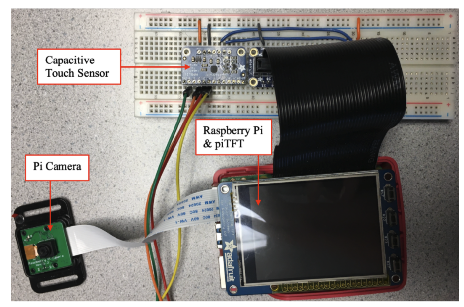

ECE 5725 FINAL PROJECT - FALL 2021 Yu Zhang and Sirena Depue
Demonstration Video
Introduction
The purpose of this project is to create a self-contained system that monitors and alerts the driver when distracted. There are several categories within ‘distracted driving’ that we considered. Using OpenCV and DLib to detect a face and extract facial features from picamera footage, we can detect whether the driver is drowsy, is facing away from the road, or is looking away from the road. In addition, a capacitive touch sensor is used to detect whether the driver’s hands are on the steering wheel. An OBDII scanner is used to log the speed of the vehicle in real-time. To avoid unnecessary alarms, the alarms are paused when the car is safely stopped.
Additionally, there are time thresholds that must be exceeded before an alarm goes off. The triggering of the alarms is also reflected in a basic piTFT display. The following report outlines the implementation and testing of each feature and suggested future improvements.
Project Objective:
Driver monitoring, including facing away detection, drowsiness detection, eye tracking and steering wheel detection
Connecting to the car and monitors vehicle speed in real time
Warning drivers in the interface after events recognition
Design & Testing
Drowsiness Detection
The drowsiness detection feature requires the use of a Pi camera. We use OpenCV to detect a face and extract facial features from the camera. Then we apply Dlib's facial landmark detection to detect the eyes and use the Eye Aspect Ratio (EAR) algorithm, which was introduced by Soukupová and Čech’s in their 2017 paper[1], to determine whether the driver is drowsy.
The EAR value can be calculated using the following formula. When the eyes are fully open, the EAR value should be larger than a pre-defined threshold. And when the eyes are closed, the EAR value decreases and tends to zero, which means that it must be less than our pre-defined threshold.
Facial recognition and facial feature extraction is a huge burden for the Raspberry Pi, especially since Python can only use at most one core for one process. With this in mind, we decided to take a multi-process approach to optimize the performance of drowsiness detection. We split the original program into three processes. The img_put() process is used to read the input from the camera and pass each frame to the face_process() process which extracts the facial information and sends the result to the img_get process. The img_get() process displays the result on the output.
In theory, it is also possible to open multiple face_process() processes by using the Poll function to make face processing faster. However, in the actual test, because the performance of Raspberry Pi is really limited and we need to run other programs at the same time, the excessive resource consumption caused by opening multiple face_process processes will make the overall effect degrade.
The test result of our program is shown in the figure below. The image on the left shows the EAR value under normal conditions, and the image on the right shows the EAR value when the eyes are closed.
Facing away Detection
An extension of the drowsiness detection feature is to consider when the driver is facing away from the camera. When this occurs, dlib can no longer detect a face and facial features cannot be computed. If the numpy array returned is empty, we know that a face is not detected, and we assume the driver is facing away from the road and is therefore distracted. When this occurs, an alarm is sounded.
Facing Away Detection
Eye Tracking
Where a face can still be detected when a person angles their head away from the camera, eye tracking is also implemented to check whether their eyes are focused on the road. In implementing the drowsiness detection, the recognition and extraction of facial features were already initialized. Since humans cannot move their eyes independently of each other, we only considered the left eye to reduce image processing. A function was added to return the coordinates of the outer corner (x1), inner corner (x2s. To achieve this, each frame is prepared using the function cv2.bitwise_not to invert the image and cv2.cvtColor to convert it to grayscale. Then, we use thresholding to segment the image into the foreground and background), bottom (y1), and top (y2) of the left eye. The function is called and the returned values are used to crop each frame of the video.
Next, the iris needs to be delineated from the whites of the eyed (iris and whites of the eye) via some threshold value, T. Where the lighting conditions vary, a constant threshold value will not predictably segment the image. Instead, we use adaptive thresholding via cv2.adaptiveThreshold, which automatically finds the optimal threshold value T(x,y) from the mean of the ùöãùöïùöòùöåùöîùöÇùöíùö£ùöé√óùöãùöïùöòùöåùöîùöÇùöíùö£ùöé neighborhood of (x,y) - C, according to the documentation[2]. Now we can find the contours of the iris in each frame using cv2.findContours(), which as its name would suggest, extracts the contours from an image. We find the center coordinates of the iris via cv2.moments(), and compare this value to the center of the left eye.
If |xcenter of eye-xcenter of iris| > 8, then the person is looking away. The direction can be distinguished by considering the signs, but this was not necessary for this project. Snapshots are shown below with a circle drawn on the detected iris and with the thresholding applied. Although not perfect, the adaptive thresholding is able to find the iris when looking left and right, enough so that the contours can be found.
Eye Tracking
Steering Wheel Detection
For the steering wheel detection feature, we first considered using an analog force sensor. After some testing, it was determined that the sensors were not sensitive enough for this application - a voltage difference was detected only when squeezed.
Although this could be resolved via a voltage divider, we decided to try a simpler alternative: capacitive touch sensors. They detect a change in capacitance when someone touches the sensor, therefore only outputting a low or high state. Additionally, they provide flexibility in that they can be attached to conductive surfaces (aluminum tape) via alligator clips. This allowed us to increase the surface area for each sensor and cover a greater area of the steering wheel. Realistically, this would require a steering wheel cover with many sensors since a person may hold the wheel in any position.
For the purposes of this project, we will only use two sensors for each hand at the recommended 9 and 3 o'clock positions. If at least one of the surfaces is touched (i.e. high), then it is assumed that the person has at least one hand on the wheel. However, if none of the surfaces are touched (i.e. low), then it is assumed the person has neither hand on the wheel and an alarm is sounded. This is achieved by checking the values of each pin within a polling loop.
Another feature we implemented was using real-time car speed data to determine whether to sound alarms. The data collection was achieved through an OBDII scanner, which is a port found in all cars sold in the USA after 1996. It can be used to access live data from the car, including speed. Using this, if the speed was greater than 0 and the driver was distracted, the system would issue an alarm. However, if the car was not moving (parked, stopped in traffic) and the driver was distracted, the system would not issue an alarm. This is to prevent the driver from being alerted when the car is safely stopped.
We encountered several issues when purchasing an OBDII reader. The only car we had access to was an Alfa Romeo Giuliua - an Italian car. However, after reading through some forums, we discovered that since it was sold in the USA, the connection had to be standard. We first ordered an OBD2 reader compatible with wifi, but after some time, we were unable to connect. Instead, we ordered an OBD2 reader compatible with Bluetooth as an alternative. We used the same OBD install and BLE connection setup as a team from the previous year, which was very straightforward. As a brief summary, we enabled Bluetooth connection, scanned and connected to the OBDII, and extracted the speed using a simple script. The Wifi should work, but we would recommend using Bluetooth compatible OBDII, as it is well documented and much easier to implement.
Pygame Interface
Using pygame, we created a basic interface to display on the piTFT. We have divided the screen into five areas, the first of which displays the current vehicle speed in real-time. The other four areas are divided into four quadrants and we devoted each quadrant to one of the four main features (drowsiness, facing away, eye tracking, and wheel detection).
Each quadrant is initialized as black, and if distracted driving is detected, the appropriate quadrant is filled with red and a statement printed to the screen. At the bottom of each quadrant, there is also a counter, which records the number of instances of each distracted driving event. A small section was left at the top to show/update the speed of the car. Finally, a quit button was implemented to allow the user to cleanly exit the program, using one of the physical piTFT buttons. Our interface is shown in the picture below.
Pygame Interface
Drawings
Function Architecture

Final Hardware System
Result and Future Improvements
Overall, these features showed promising results. Our demo worked well, with all major features performing as intended. We only encountered one minor issue - we were unable to get the alarm sound to work properly.
For the steering wheel detection, it was pointed out during the demo that someone could trick the system and drive with minimum contact of one hand (holding a finger to the sensors). This could be adjusted by requiring at least two sensors be touched.
One potential extension of the OBDII would be to consider the direction of the car's travel. If the driver was reverse or parallel parking, this would require the person to look behind them, thus triggering an unnecessary alarm. Either the alarms could be disabled when put into reverse, or there could be a button to momentarily disable the alarms (for 2-3 minutes), while the person parks.
The eye tracking worked quite well, although it would need to be tested in a car before being implemented in any real system. For example, someone could be adverting their gaze from the road to check their rearview or side mirrors. The number of seconds before sounding an alarm, as well as the threshold, D, for |xcenter of eye-xcenter of iris| > D would need to be tested and adjusted to work for a real driver.
Where all of these detectors (except steering wheel) require a camera, the performance is expected to markedly decrease in the night-time. This presents an issue, since drivers are more likely to be drowsy at night, and despite 60% less traffic on the roads, more than 40% of all fatal car accidents occur at night [4]. Since it is considered a distraction for a driver to have cabin lights on in the car, we would have to implement a night vision camera.
Work Distribution
Yu Zhang
yz2729@cornell.edu
Designed the overall software architecture and implemented functions including drowsiness detection, facing away detection, multiprocessing, OBDII, pygame display
Sirena Depue
sgd63@cornell.edu
Built the hardware system and implemented functions including: eye tracking, sterring wheel detection, OBDII, and pygame display